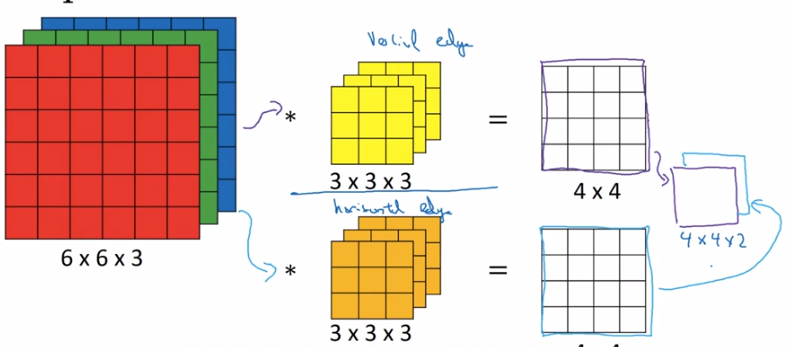
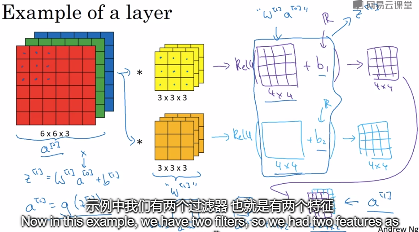
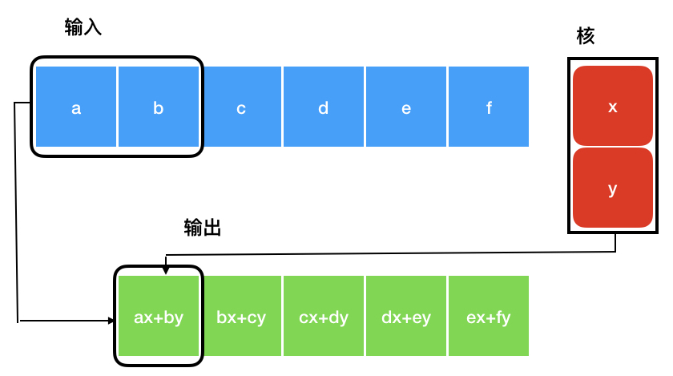
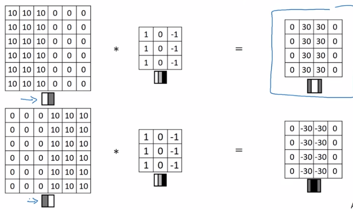
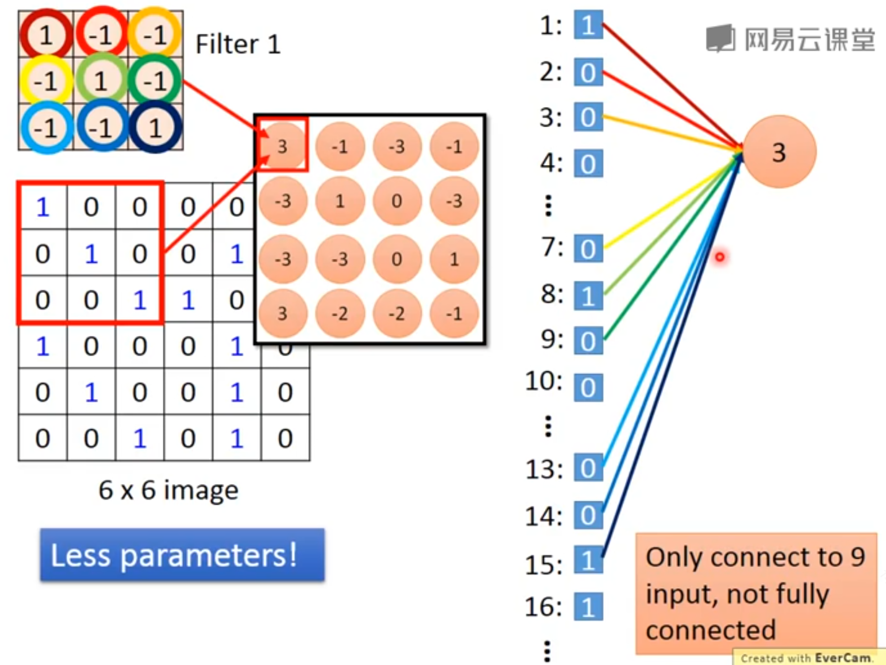
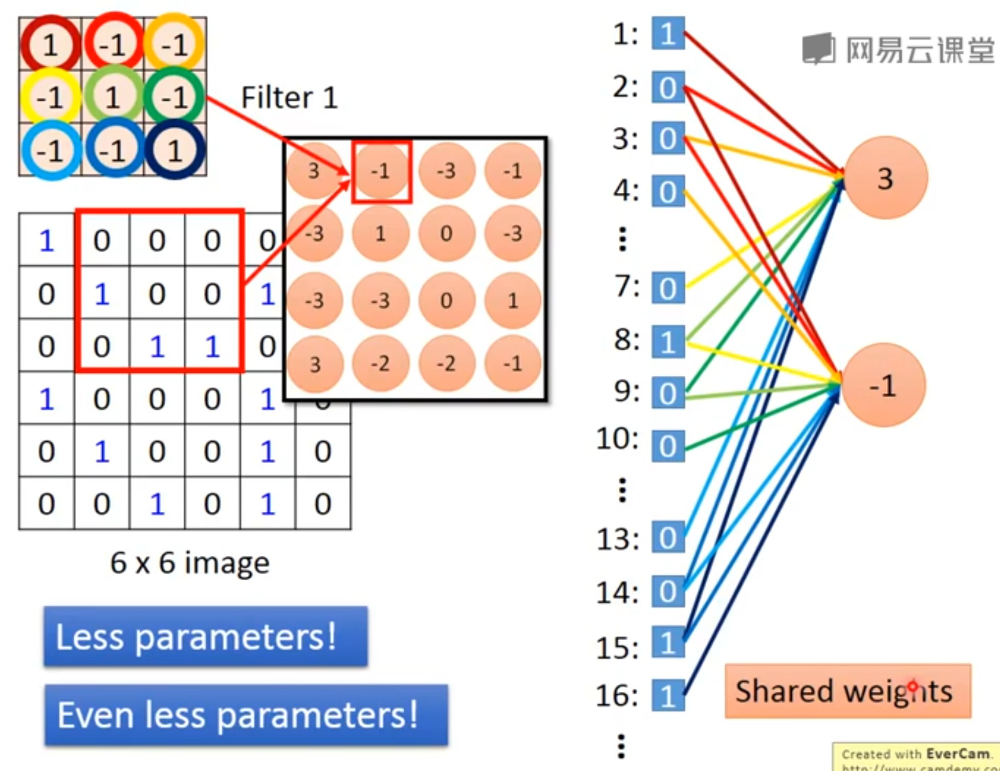
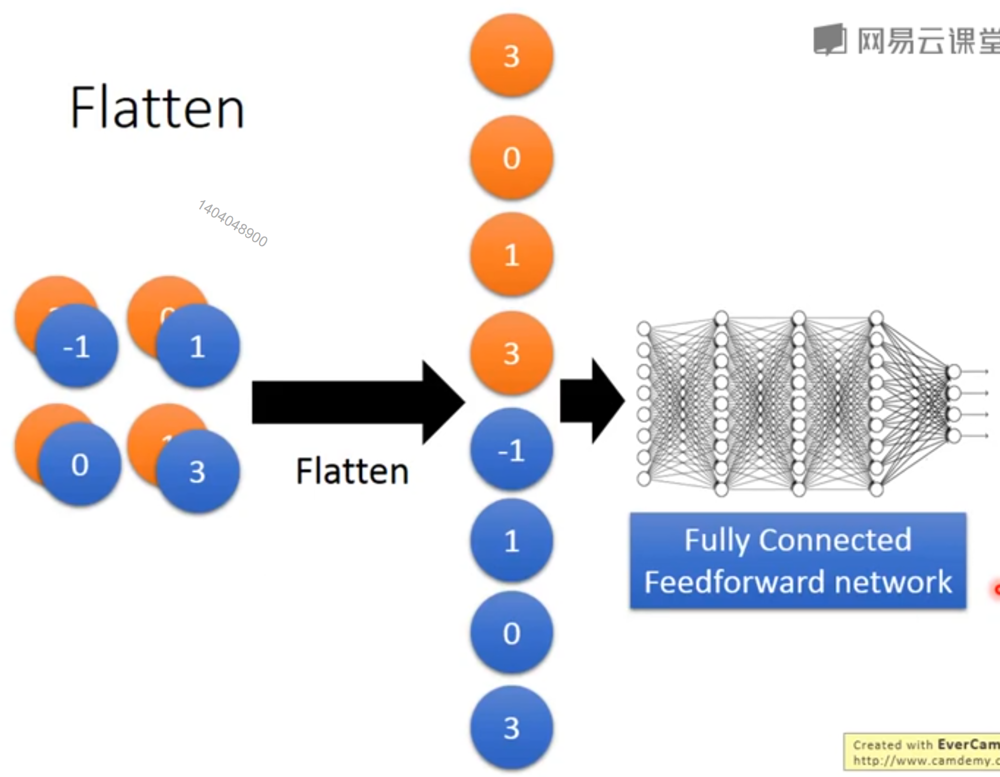

在通常形式中，卷积是对两个实变函数的一种数学运算。
[success] 实变函数：以实数作为自变量的函数叫做实变函数。
1. 卷积运算
为了给出卷积的定义，我们从两个可能会用到的函数的例子出发。
[success] 卷积运算:
x是输入，w是核函数，s是特征映射
假设我们正在用激光传感器追踪一艘宇宙飞船的位置。 我们的激光传感器给出一个单独的输出，表示宇宙飞船在时刻 的位置。 和都是实值的，这意味着我们可以在任意时刻从传感器中读出飞船的位置。
现在假设我们的传感器受到一定程度的噪声干扰。
为了得到飞船位置的低噪声估计，我们对得到的测量结果进行平均。
显然，时间上越近的测量结果越相关，所以我们采用一种加权平均的方法，对于最近的测量结果赋予更高的权重。
我们可以采用一个加权函数 来实现，其中表示测量结果距当前时刻的时间间隔。
如果我们对任意时刻都采用这种加权平均的操作，就得到了一个新的对于飞船位置的平滑估计函数：
这种运算就叫做卷积(convolution)。
卷积运算通常用星号表示：
在我们的例子中，必须是一个有效的概率密度函数，否则输出就不再是一个加权平均。 另外，在参数为负值时，的取值必须为0，否则它会预测到未来，这不是我们能够推测得了的。 但这些限制仅仅是对我们这个例子来说。
[success] 仅仅是这个例子中要求w函数满足这些条件。真正的卷积运算没有这样的限制。
通常，卷积被定义在满足上述积分式的任意函数上，并且也可能被用于加权平均以外的目的。
在卷积网络的术语中，卷积的第一个参数（在这个例子中，函数）通常叫做输入(input)，第二个参数（函数）叫做核函数(kernel function)。 输出有时被称作特征映射(feature map)。
2. 离散形式的卷积
在本例中，激光传感器在每个瞬间反馈测量结果的想法是不切实际的。
一般地，当我们用计算机处理数据时，时间会被离散化，传感器会定期地反馈数据。
所以在我们的例子中，假设传感器每秒反馈一次测量结果是比较现实的。
这样，时刻只能取整数值。
如果我们假设和都定义在整数时刻上，就可以定义离散形式的卷积：
3. 高维的卷积
在机器学习的应用中，输入通常是多维数组的数据，而核通常是由学习算法优化得到的多维数组的参数。 我们把这些多维数组叫做张量。 因为在输入与核中的每一个元素都必须明确地分开存储，我们通常假设在存储了数值的有限点集以外，这些函数的值都为零。 这意味着在实际操作中，我们可以通过对有限个数组元素的求和来实现无限求和。
最后，我们经常一次在多个维度上进行卷积运算。
例如，如果把一张二维的图像作为输入，我们也许也想要使用一个二维的核：
[success]
前面讲的都是单通道的卷积，现在是多通道的卷积。
多通道卷积的原图像是三维的，例如RGB图像是三通道的图像。
多通道图像做卷积，图像的通道数与核的通道必须相同。即输入为，核的大小应该为。卷积的结果为。
多通道的原图像 多通道的核 = 单通道的图像
多通道的原图像 n个多通道的核 = n个通道的图像 = 1个n通道的图像。


4. 核翻转与互相关卷积
[success]
数学上的卷积会有核翻转的动作。
而DL中所有的卷积在数学上称为“互相关cross-correction”。
即DL“卷积” = 数学“互相关”
数学“卷积” = DL“卷积” + 数学“翻转”。
数学上的翻转操作是为了实现某些数学性质。在DL中不需要这些性质。因此DL中的卷积不需要翻转这一步。
例如一个核为：翻转之后是这样的：
卷积是可交换的(commutative)，我们可以等价地写作：
通常，下面的公式在机器学习库中实现更为简单，因为和的有效取值范围相对较小。
卷积运算可交换性的出现是因为我们将核相对输入进行了翻转(flip)，从增大的角度来看，输入的索引在增大，但是核的索引在减小。
我们将核翻转的唯一目的是实现可交换性。
尽管可交换性在证明时很有用，但在神经网络的应用中却不是一个重要的性质。
与之不同的是，许多神经网络库会实现一个相关的函数，称为互相关函数(cross-correlation)，和卷积运算几乎一样但是并没有对核进行翻转：
许多机器学习的库实现的是互相关函数但是称之为卷积。 在这本书中我们遵循把两种运算都叫做卷积的这个传统，在与核翻转有关的上下文中，我们会特别指明是否对核进行了翻转。
[warning] 图9.1算是互相关卷积吗？核翻转卷积是怎样的？
在机器学习中，学习算法会在核合适的位置学得恰当的值， 所以一个基于核翻转的卷积运算的学习算法所学得的核，是对未进行翻转的算法学得的核的翻转。 单独使用卷积运算在机器学习中是很少见的，卷积经常与其他的函数一起使用，无论卷积运算是否对它的核进行了翻转，这些函数的组合通常是不可交换的。
[warning] 举个例子？
图9.1演示了一个在2维张量上的卷积运算（没有对核进行翻转）的例子。 我们限制只对核完全处在图像中的位置进行输出，在一些上下文中称为"有效"卷积。
[warning] 只对核完全处在图像中的位置进行输出?
5. 卷积运算的特点
离散卷积可以看作矩阵的乘法，然而，这个矩阵的一些元素被限制为必须和另外一些元素相等。 例如对于单变量的离散卷积，矩阵每一行中的元素都与上一行对应位置平移一个单位的元素相同。 这种矩阵叫做Toeplitz矩阵。
[success] 单变量卷积

对于二维情况，卷积对应着一个双重分块循环矩阵。
[warning] 这里不是很理解双重分块循环矩阵?
除了这些元素相等的限制以外，卷积通常对应着一个非常稀疏的矩阵（一个几乎所有元素都为零的矩阵）。
[warning] “非常稀疏的矩阵”在哪？
这是因为核的大小通常要远小于输入图像的大小。任何一个使用矩阵乘法但是并不依赖矩阵结构的特殊性质的神经网络算法，都适用于卷积运算，并且不需要对神经网络做出大的修改。
[warning] 不依赖矩阵结构的特殊性质的神经网络算法？
典型的卷积神经网络为了更有效地处理大规模输入，确实使用了一些专门化的技巧，但这些在理论分析方面并不是严格必要的。
[success]
每个kernel定义一个小的矩阵用于侦测一个patten，例如下图使用33的kernel分别做左亮右暗和左暗右亮的垂直边缘检测。

Ag还列了其它一些kernel，不记了。DL的kernel是自己学出来的。
图像一块同样大小的区域与kernel的内积，得到一个数值。
全部数值组合到一起，是一个小一点的矩阵，称为feature map。
矩阵中的值越大，说明原图像对应位置与patten越相似。
每个filter会得到一个feature map。
如果原始图像是彩色的，那么原始图像是3维的张图，kernel也是3维的张量。
*卷积网络层与全链接网络层的区别：
（1）full connect -> 只连接部分input

（2）每个连接使用不同参数 -> 参数共享

flatten：
